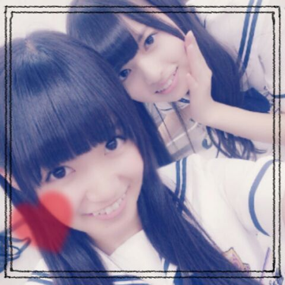
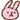
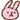
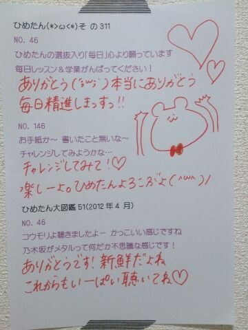

| 2013/09 28 Sat | ひめたん(*>ω<*)そ の348 |

この写め確か３ヶ月前
どうかな。この頃からひめたん変わったかな。
夏アニメ終わってしまった(´・ω・｀)
実はダンガンロンパ以外にも
いくつかみてたのよー
秋アニメも楽しみすっ
はよ10月になれーいっ
って あしゅりん (齋藤飛鳥ちゃん)と話してましたっ
最近あしゅりんとひめたん仲良いよねー
ね？あしゅりん？そうだよね？

明日は名古屋個握ー
 

名古屋は全国ツアーぶり！お久しぶり名古屋！
明日はどんなお洋服か楽しみにしててねー
そしてみなさーんのお洋服も
楽しみにしてるよーう！
噂によると
HBDひめたんTシャツとB.L.T.Tシャツも
届いたとゆーことで(〃ω〃)うしし
あ、でもきっと寒いから
パーカーはおるとかしてね☆
そのへんは頼みますよー風邪とかひかないでねっ
あーそうそう！ねーみなさん
みりりん (渡辺みり愛ちゃん)のブログみたー？
最近ねふたりでね
ずっーとねーらぶらぶしてるの
もう超かわいいどーしよう/////
ずっと連絡してるの
死んでしまうのはこっちの方だよ妹ちゃん。
みりりんはひめたんの妹ちゃんなの(*^ω^*)
いっつもお姉ちゃんよいしょしてくれるの
いつかお泊まりする約束だってしたんだよーう
そしてひめたんお姉ちゃんも
みりりんにかまちょしてもらいます
甘えんぼちゃん姉妹をどうぞよろしくねっ


 ひめたんの最近のマイブームってなにー！？
ひめたんの最近のマイブームってなにー！？
なんだろー......
カラダに良さそうなドリンクを
やたらめったら飲んでるよ◎
ひめたんは今一番欲しいものは何ですか？
いちばんと言われたら困ってしまうなあー
キディランドとかでゆっくりお買いものしたいー
ひめたんはどんな夢みるー？
夢はねよくみるんだけどね
すぐに忘れてしまうのよ(´・ω・｀)
でもね楽しい夢が多い気はするよ♪
大変恐縮ですが....
ひめたんのニックネーム真似して
まほたんって名乗ってもいいですか....
まほたん！まほたんんん( ^ω^ )
オソロっちだねーひめたんまほたん！
ななせまる推しなんだけど
ななせまるに内緒のまま
ひめたんも推していいかな?
ひめたんはうぇるかんむっだよー
ななせまるには内緒なのね？おけ！
そーいやななせまると２人で全握とか
組んだことないなあー
今度ななひめレーンとかあったらいいね♪
理男子についてどう思う？笑
尊敬する。教えてほしい。
とゆーかひめたんを救ってほしい切実に←
いやお願いしますお願いだから救ってください
ひめたんは、林檎と梨どっちが好きー？？
りんご好きだよー(o・・o)
でもねーところが梨も好きなんだよー
だからどっちかな。どっちもはだめかな。
乃木坂のりんご姫はもう大好きだよー！
 ひめたん今週のバナナムーンGOLDの
ひめたん今週のバナナムーンGOLDの
ポッドキャスト聞いた？
ひめたんの話題を出していただいたって
聞きました(´;ω;｀)
バナナマンさん、教えてくださったみなさん
ありがとうございましたっ
前に前髪は切ってもらってるーて
言っとったけど、どうやったら綺麗に
切れるのかなーって思ったので、
きいていただけたら嬉しいです
了解(｀・ω・´)ゝしばしお待ちを！
ひまわりの種ってどんな味するの？
食べてみる？
そしてひめたんに教えてくれる？
ひめたんは、カラオケとかよく行くの？
最高何点だったー？
よく行くよーう
自信がないので採点はもうずっとやってないです
残酷な天使のテーゼで
最高点とった記憶があるけど何年前かな(遠い目)
ひめたんはストレス解消する時に
どうしてますか？
寝ますね( ^ω^ )
あのーそうですねそれ以外だったら
誰かにかまちょかまちょしてもらいます
みんなのお腹つついたりしてると
元気になりますね！
お昼は、お弁当？学食？
どんなのを食べてますか?←
たーまーに食堂にも行くけども
最近は野菜ジュースで済ませてしまう
なんてゆーか、そーゆー気分です。 秋だから？
 びーむってどんなときに使えば良いの？？
びーむってどんなときに使えば良いの？？
ここぞって時に使ったらいいと思います
きっと相手はきゅんきゅんってして
パタッてなってくれるはず。
 ひめたんって、通ってる制服のスカート丈
ひめたんって、通ってる制服のスカート丈
どれくらーい？？
15センチ？とか？
校則で決まってるわけじゃないから
正確にはかったことないけどそんくらい多分☆
ままが美容院行って
オーダーをミスってぱっつんになったらしいの。
そいで鏡をみたら
「ひめたんだわ！」ってなったらしい( ^ω^ )/
ままが幼い！
オソロっちさんになってしまった！
だからお願いだからミスったって言わないで！

(＊´・ω・＊)
コメント(304)
2013/09/28 23:48